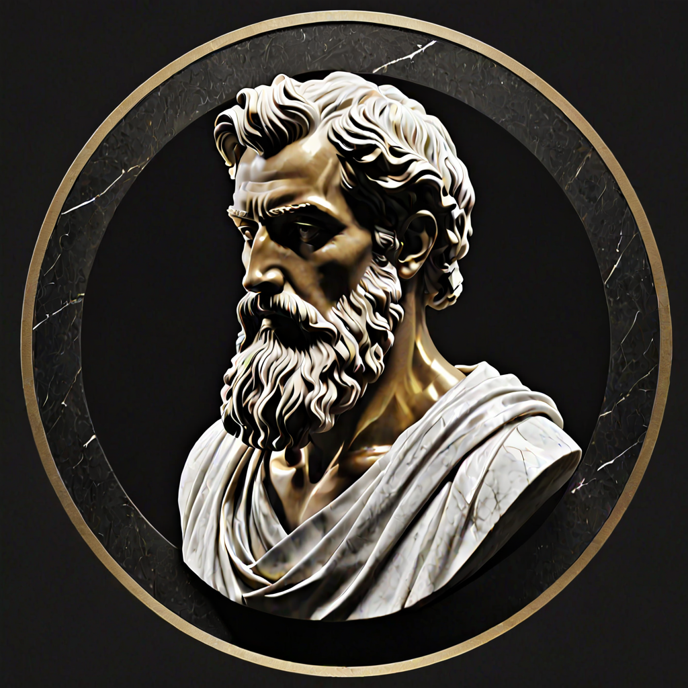

STOA'NIN SESİ
Kadim bilgelik, modern zihin.
Stoa'nın Sesi; Seneca, Epiktetos, Marcus Aurelius, Sokrates, Nietzsche ve Camus gibi düşünürlerin fikirlerini kısa, sinematik videolarla anlatan bir felsefe ve motivasyon kanalıdır. Videolardaki alıntılar kaynaklarıyla birlikte paylaşılır.
Videolarımızın seslendirmesi, görselleri ve müzikleri yapay zekâ araçlarıyla üretilmektedir; senaryolar ve kaynak kontrolü kanal tarafından yapılır.
Stoa Uploader
“Stoa Uploader”, kanalın kendi videolarını YouTube Data API aracılığıyla yalnızca kanal sahibinin kendi YouTube kanalına yüklemek ve zamanlamak için kullandığı dahili bir araçtır. Kamuya açık bir hizmet değildir; başka kullanıcıların verilerine erişmez.
Ayrıntılar için: Gizlilik Politikası · Kullanım Şartları
İletişim: ramazangocer57@gmail.com